Texture Analysis of Landsat Imagery: Statistical and Structural Methods
Statistical texture methods describe how gray levels are distributed inside a window, either one pixel at a time (first-order statistics), in pairs of pixels (the Gray-Level Co-occurrence Matrix, GLCM), or along runs of equal pixels (the Gray-Level Run-Length Matrix, GLRLM).
Overview
Structural methods treat texture as primitives, such as edges and gaps, arranged in space. Together they are the most widely used texture measures in remote sensing. This notebook explains the theory of each method, computes it on the NIR band of a Landsat 9 scene over Las Vegas with geolattice.rsense.texture, and tests what it adds to spectral information.
Image texture in brief
Spectral values tell us what a pixel is made of; texture tells us how pixel values are arranged around it. Texture is the spatial variation of gray levels inside a neighbourhood and describes properties such as smoothness, coarseness, regularity, directionality and contrast. Haralick, Shanmugam and Dinstein (1973) noted that tone and texture are always present together in an image, but one may dominate the other depending on the scene.
At Landsat’s 30 m resolution many land-cover classes overlap spectrally: urban fabric, bare soil and rock are all bright and dry in an arid scene; crop types or forest stands can share the same NDVI; rough terrain mixes lit slopes and shadow within a few pixels. Texture separates such classes because it responds to pattern, not only to brightness, and texture layers are routinely stacked with bands and indices as predictors in land-cover classification, urban mapping, forest-structure modelling and soil mapping.
Methods are usually grouped into six families. This series covers them in five notebooks:
Notebook
Family
Methods
09_07_01
Statistical and structural texture (this notebook)
All methods come from geolattice.rsense.texture. Every function accepts a 2-D xr.DataArray (or NumPy array) and returns a georeferenced result with the same shape as the input; inputs with leading dimensions (band, time, polarization) are processed slice by slice, and multi-feature methods return an xr.Dataset with one variable per feature.
Statistical methods: theory
Let \(g(x, y)\) be the gray level (reflectance) of the pixel at row \(y\), column \(x\), and let \(W\) be a square window of \(N = s \times s\) pixels centred on a pixel. Statistical texture summarizes the values in \(W\) at three levels of order.
First-order statistics use only the histogram of \(W\) and ignore where the values are:
Measure
Formula
Describes
Mean
\(\mu = \frac{1}{N}\sum_{W} g\)
Local brightness (a smoothed image)
Variance / std
\(\sigma^2 = \frac{1}{N}\sum_{W}(g-\mu)^2\)
Local contrast or roughness
Skewness
\(\frac{1}{N\sigma^3}\sum_{W}(g-\mu)^3\)
Asymmetry: a few bright objects on a dark background (> 0) or the reverse (< 0)
Excess kurtosis
\(\frac{1}{N\sigma^4}\sum_{W}(g-\mu)^4 - 3\)
Heavy tails: isolated extreme pixels
Entropy
\(-\sum_k p_k \log_2 p_k\)
Disorder of the local histogram (\(p_k\) = share of pixels in bin \(k\))
Second-order statistics (GLCM). Haralick et al. (1973) proposed counting how often gray level \(i\) occurs at a fixed offset from gray level \(j\). For a displacement of \(d\) pixels at angle \(\theta\), the co-occurrence matrix of a window quantized to \(L\) levels is
\[C_{d,\theta}(i, j) = \#\{\,(p, q) \in W : g(p) = i,\; g(q) = j,\; q = p + d(\cos\theta, -\sin\theta)\,\}.\]
The matrix is made symmetric (\(C + C^\top\), counting each pair in both directions) and normalized to probabilities \(P(i, j) = C(i, j) / \sum C\). With \(\mu_i = \sum i\,P(i,j)\) and \(\sigma_i^2 = \sum (i-\mu_i)^2 P(i,j)\), the classic Haralick features are:
Feature
Formula
High for
Contrast
\(\sum_{i,j} P(i,j)\,(i-j)^2\)
Strong local variation (city blocks, edges)
Dissimilarity
\(\sum_{i,j} P(i,j)\,\lvert i-j\rvert\)
Same as contrast, but linear in the difference
Homogeneity (IDM)
\(\sum_{i,j} P(i,j) / (1+(i-j)^2)\)
Neighbours with similar values (smooth soil, water)
Energy (ASM\(^{1/2}\))
\(\sqrt{\sum_{i,j} P(i,j)^2}\)
A few dominant gray-level pairs (uniform, orderly texture)
Higher-order statistics (GLRLM). Galloway (1975) counted runs: maximal sequences of consecutive pixels with the same quantized gray level along a direction. The run-length matrix \(R(i, r)\) is the number of runs of gray level \(i\) and length \(r\). With \(n_r\) the total number of runs and \(N_p\) the number of pixels (times the number of directions),
Short runs (high SRE, high RP) mean fine texture; long runs (high LRE, low RP) mean coarse or striped texture.
Structural methods: theory
Structural (syntactic) texture analysis treats an image as primitives placed by rules: bricks in a wall, buildings along a street, ridges in a fold belt. Full syntactic grammars are rarely practical on satellite imagery, so two simple density measures are used instead.
Edge density. The Canny (1986) detector finds edge primitives in four steps: Gaussian smoothing (scale \(\sigma\)), gradient magnitude and direction, non-maximum suppression (thin edges to one pixel), and hysteresis thresholding (keep strong edges and the weak edges connected to them). Edge density is the share of edge pixels in each window, \(\;\mathrm{ED} = \frac{1}{N}\sum_W \mathbb{1}[\text{edge}]\).
Lacunarity. Plotnick et al. (1996) measure how unevenly “mass” fills space. A box of side \(r\) glides over the image; the mass \(M\) in each box is the sum of the values inside it. Lacunarity at scale \(r\) is
\(\Lambda(r) = 1\) for a perfectly uniform pattern; larger values mean gaps and clumps at that scale. Plotting \(\Lambda\) against \(r\) shows the scales at which a pattern is heterogeneous.
Applications
Application
Typical measures
Why it works
Urban and impervious-surface mapping
GLCM contrast, entropy, local std, edge density
Built-up areas alternate roofs, roads and vegetation at a fine scale
Forest structure and biomass
GLCM homogeneity, entropy, local variance
Canopy gaps and crown size change the local variance
Crop-type and field mapping
GLCM, GLRLM, directional GLCM
Row direction and field size create runs and directional contrast
SAR land-cover classification
GLCM on backscatter, first-order statistics
Speckle statistics differ between smooth water, fields and forest
Geology and landforms
Directional GLCM, edge density
Bedding, faults and drainage have a preferred direction
Soil and digital soil mapping
Local std, GLCM homogeneity of bare-soil bands
Erosion, stones and crusts change surface roughness
Landscape ecology
Lacunarity
Gap structure of habitat patches across scales
Learning objectives
Explain first-order, co-occurrence (GLCM) and run-length (GLRLM) statistics and compute them by hand on a small example.
Explain the edge-density and lacunarity measures of structural texture.
Compute all five methods on Landsat NIR with geolattice.rsense.texture and interpret each feature.
Assess the effect of window size, gray levels, direction and band on texture values.
Compare texture signatures of urban, bare-soil and mountain surfaces and test what statistical texture adds to an unsupervised classification.
All four bands come from the Las Vegas scene used in the Landsat module (09_02_04_landsat_half_a_century_of_earth_observation): path 39, row 35, 8 July 2024, UTM zone 11N (EPSG:32611), 30 m, 1,679 × 1,512 pixels, stored as unsigned 16-bit DN with 0 as the fill value.
Contents
Setup
Loading the Landsat bands and the study window
Why texture? Same histogram, different arrangement
First-order statistics
Gray-Level Co-occurrence Matrix (GLCM)
Gray-Level Run-Length Matrix (GLRLM)
Structural texture: edge density and lacunarity
Application: texture signatures and clustering
Summary and exercises
Setup
Installation. This notebook needs installation option 5 (core, spatial analysis, spatial statistics, geostatistics and remote sensing): pip install "geolattice[remote-sensing]". See “Installation options” in the GeoLattice README.
Code
# Setup: silence noisy warnings, import the libraries and choose the array backend.import warningswarnings.filterwarnings("ignore", category=UserWarning) # hide routine library warningswarnings.filterwarnings("ignore", category=RuntimeWarning) # e.g. 'mean of empty slice' in all-NaN windowswarnings.filterwarnings("ignore", category=FutureWarning) # deprecation notices from pandas and xarrayimport time # time each texture computationfrom pathlib import Path # portable file pathsimport numpy as np # arraysimport pandas as pd # tablesimport xarray as xr # labelled rasters (DataArray, Dataset)import rasterio # GeoTIFF reading and writingimport matplotlib.pyplot as plt # figuresfrom matplotlib.patches import Rectangle # draw the study-window rectangleimport geolattice.rsense as rs # GeoLattice remote sensing: reading, scaling and plottingfrom geolattice.rsense import texture as tx # GeoLattice texture functionsrasterio.Env(CPL_LOG="/dev/null").__enter__() # silence GDAL log messages for the whole sessionplt.rcParams.update({"figure.dpi": 90}) # figure resolution# "cpu" keeps every array on NumPy; the texture functions copy GPU arrays to the CPU anyway.# report the GeoLattice version and switch to the NumPy (CPU) backendprint("geolattice.rsense", rs.__version__, "| backend:", rs.set_backend("cpu"))
geolattice.rsense 0.3.49 | backend: cpu
Loading the Landsat bands and the study window
The files hold raw Collection 2 Level-2 digital numbers (DN). We read them with rs.read, put them in one xr.Dataset, and convert them to surface reflectance with rs.optical.scale, which applies reflectance = DN × 0.0000275 − 0.2 and turns the fill value 0 into NaN.
Window-based texture is easier to see, and much faster to compute, on a smaller area. We work on a 512 × 512 pixel window (15.4 × 15.4 km) on the eastern edge of Las Vegas that contains four very different surfaces:
the regular street grid of the city (west),
the smooth, bare alluvial fan below Frenchman Mountain (centre),
the folded sedimentary ridges of Frenchman Mountain (east),
the vegetated channel of the Las Vegas Wash (south), red in colour infrared.
Code
# 1. Read each band as a 2-D DataArray (drop the singleton "band" dimension).DATA = Path("../../../../Data/00_shared/data_remote_sensing/landsat9_vegas_20240708/LC09_L2SP_039035_20240708_02_T1") # Landsat 9 scene, path 39 row 35, 8 July 2024BANDS = ["blue", "green", "red", "nir"] # the four bands used in this notebook# read each band; masked=False keeps the raw digital numbers (DN)ls_dn = xr.Dataset({b: rs.read(DATA /f"{b}.tif", masked=False).squeeze("band", drop=True)for b in BANDS}) # one variable per bandls_dn = ls_dn.rio.write_crs(ls_dn["red"].rio.crs) # store the CRS on the Dataset as a whole# 2. Scale DN to surface reflectance (fill value 0 becomes NaN) and clip to [1e-4, 1].# Landsat Collection 2 scale and offset: DN -> reflectancels = rs.optical.scale(ls_dn, sensor="landsat").clip(min=1e-4, max=1.0)# scene size, pixel size and CRSprint(f"{ls.rio.width} x {ls.rio.height} pixels at {ls.rio.resolution()[0]:.0f} m, CRS {ls.rio.crs}")# 3. Study window (rows/columns in the full scene) and the NIR band used for most texture measures.WIN =dict(y=slice(500, 1012), x=slice(900, 1412)) # 512 x 512 pixel window (rows 500-1011, columns 900-1411)sub = ls.isel(WIN) # all four bands inside the windownir = sub["nir"] # the NIR band of the window
1679 x 1512 pixels at 30 m, CRS EPSG:32611
Code
# Where the study window lies, and how it looks in natural colour and colour infrared.fig, axes = plt.subplots(1, 3, figsize=(17, 5.5)) # three panels side by side# full scene, red-green-bluers.viz.plot_rgb(ls, "true_color", ax=axes[0], title="Las Vegas, Landsat 9, 8 Jul 2024 (R, G, B)")# the study window in yellow (x = column 900, y = row 500)axes[0].add_patch(Rectangle((900, 500), 512, 512, fill=False, ec="yellow", lw=2))# the window in natural colourrs.viz.plot_rgb(sub, "true_color", ax=axes[1], title="Study window, natural colour")# NIR, red, green: vegetation appears redrs.viz.plot_rgb(sub, "false_color", ax=axes[2], title="Study window, colour infrared (NIR, R, G)")for a in axes: # hide the pixel ticks a.set_xticks([]); a.set_yticks([])plt.tight_layout(); plt.show() # arrange and draw
Which band?
Texture is computed on one band at a time. The table shows how similar the four bands are inside the window; strongly correlated bands give almost the same texture.
Code
# Correlation between the four bands in the study window (one row per pixel).band_df = sub.to_dataframe()[BANDS].dropna() # pixels as rows, bands as columns; drop no-data pixelsband_df.corr().round(3) # Pearson correlation matrix, shown as a table
blue
green
red
nir
blue
1.000
0.972
0.906
0.731
green
0.972
1.000
0.956
0.802
red
0.906
0.956
1.000
0.846
nir
0.731
0.802
0.846
1.000
The three visible bands are almost interchangeable inside the window (r = 0.91 to 0.97), so their textures will be nearly identical. NIR is less correlated with them (r = 0.73 to 0.85) and carries the most distinct information. It is the texture band for the rest of this notebook.
Code
fig, axes = plt.subplots(1, 2, figsize=(13, 5)) # image on the left, histogram on the right# the NIR window as a grey imagers.viz.plot_raster(nir, ax=axes[0], cmap="gray", title="NIR reflectance (study window)")axes[1].hist(nir.values.ravel(), bins=100, color="C0") # distribution of all NIR valuesaxes[1].set(xlabel="NIR reflectance", ylabel="Pixel count", title="NIR histogram") # axis labels and titleaxes[0].set_xticks([]); axes[0].set_yticks([]) # no pixel ticks on the imageplt.tight_layout(); plt.show() # arrange and draw
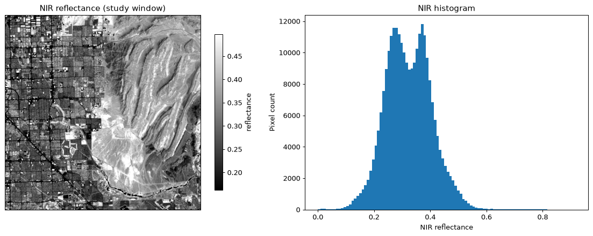
Why texture? Same histogram, different arrangement
We take a 64 × 64 patch of the city grid and randomly shuffle its pixels. The shuffled patch has exactly the same histogram, so every first-order statistic of the whole patch is identical; only the spatial arrangement changed. A second-order measure such as GLCM contrast sees the difference.
Code
# 1. A 64 x 64 patch of the street grid and a copy with its pixels randomly shuffled.patch = nir.isel(y=slice(96, 160), x=slice(32, 96)).values # rows 96-159, columns 32-95 of the windowrng = np.random.default_rng(0) # random generator with a fixed seed# the same values in random positions: same histogram, no spatial structureshuffled = rng.permutation(patch.ravel()).reshape(patch.shape)# 2. Whole-patch histogram statistics are identical by construction.def patch_stats(a): # mean, standard deviation and skewness of all values# skewness = third standardised momentreturn {"mean": a.mean(), "std": a.std(), "skewness": ((a - a.mean())**3).mean() / a.std()**3}# 3. GLCM contrast and homogeneity of one 63 x 63 window at the patch centre.def patch_glcm(a): # GLCM features of one window covering the patch# step=64: a single 63 x 63 window at the centre g = tx.glcm_texture(a, size=63, step=64, props=("contrast", "homogeneity"))return {k: float(np.nanmean(v)) for k, v in g.items()} # one number per feature# compare original and shuffled side by sidepd.DataFrame({"original": {**patch_stats(patch), **patch_glcm(patch)},# the histogram statistics agree; the GLCM features do not"shuffled": {**patch_stats(shuffled), **patch_glcm(shuffled)}}).round(4)
original
shuffled
mean
0.2829
0.2829
std
0.0728
0.0728
skewness
0.8405
0.8405
contrast
9.5407
26.7311
homogeneity
0.3819
0.2258
Code
fig, axes = plt.subplots(1, 2, figsize=(9, 4.3)) # two panelsvmin, vmax = np.percentile(patch, [2, 98]) # a common 2-98 % stretch so both panels look comparable# original and shuffled patch with their titlesfor ax, a, t inzip(axes, [patch, shuffled], ["Original street grid", "Same pixels, shuffled"]): ax.imshow(a, cmap="gray", vmin=vmin, vmax=vmax); ax.set_title(t) # show the patch in grey ax.set_xticks([]); ax.set_yticks([]) # no pixel ticksplt.tight_layout(); plt.show() # arrange and draw
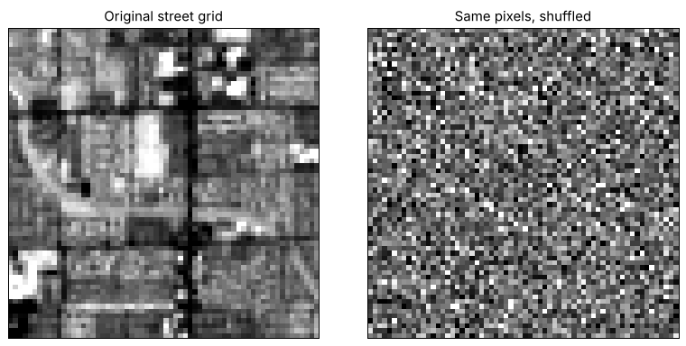
Mean, standard deviation and skewness are identical, yet GLCM contrast almost triples (9.5 to 26.7) and homogeneity falls from 0.38 to 0.23. In the real city, neighbouring pixels are similar (a roof next to a roof, a road next to a road); in the shuffled patch every neighbour is a random draw. Texture measures the spatial dependence between pixels, and first-order statistics cannot see it.
First-order statistics
tx.first_order_stats(img, size, stats, entropy_bins) computes the moments of the previous section in a moving size × size window, using box filters so it is fast even on a full scene. Entropy is the Shannon entropy (bits) of a local histogram with entropy_bins levels (computed with a disk of radius size // 2). NaN pixels stay NaN.
Strengths: fast, simple, easy to interpret, available in every GIS. Limits: blind to spatial arrangement (see Why texture? Same histogram, different arrangement), so a speckled and a striped window with the same histogram look identical.
Code
# First-order statistics of NIR in a 9 x 9 window (270 m).t0 = time.time() # start the timerfos = tx.first_order_stats(nir, size=9) # mean, std, skewness, kurtosis and entropy in each 9 x 9 window# run time and the layers that were computedprint(f"first_order_stats: {time.time() - t0:.1f} s ->", list(fos.data_vars))# a colour map per statisticcm = {"mean": "gray", "std": "magma", "skewness": "RdBu_r", "kurtosis": "viridis", "entropy": "inferno"}fig, axes = plt.subplots(1, 5, figsize=(22, 4.3)) # five panelsfor ax, f inzip(axes, fos.data_vars): # one panel per statistic rs.viz.plot_raster(fos[f], ax=ax, cmap=cm[f], title=f"NIR {f} (9x9)") # draw the layer ax.set_xticks([]); ax.set_yticks([]) # no pixel ticksplt.tight_layout(); plt.show() # arrange and draw
first_order_stats: 0.2 s -> ['mean', 'std', 'skewness', 'kurtosis', 'entropy']
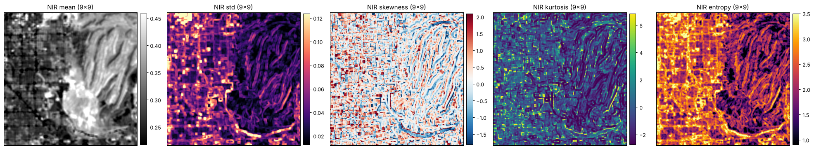
mean is only a smoothed copy of the band: the bare fan is brightest, the city darkest. The other four layers describe texture. Local std and entropy are high over the street grid, around the bright commercial roofs in the north-west and along the vegetated Las Vegas Wash, and low on the fan and inside the ridges. skewness and kurtosis are noisier; they pick out single bright or dark objects (a roof, a pond) inside an otherwise uniform window.
Window size
The window sets the spatial scale of the texture. A small window resolves individual objects but gives noisy estimates (few pixels); a large window gives stable estimates but blurs class boundaries.
Code
sizes = [5, 9, 15] # window sizes in pixels (150, 270 and 450 m)fig, axes = plt.subplots(2, 3, figsize=(15, 9)) # rows: std and entropy; columns: window sizefor j, s inenumerate(sizes): # loop over window sizes f = tx.first_order_stats(nir, size=s, stats=("std", "entropy")) # only the two statistics shown# local standard deviation rs.viz.plot_raster(f["std"], ax=axes[0, j], cmap="magma", title=f"std, {s}x{s} ({s*30} m)")# local entropy of the histogram rs.viz.plot_raster(f["entropy"], ax=axes[1, j], cmap="inferno", title=f"entropy, {s}x{s} ({s*30} m)")for a in axes.ravel(): # no pixel ticks a.set_xticks([]); a.set_yticks([])plt.tight_layout(); plt.show() # arrange and draw
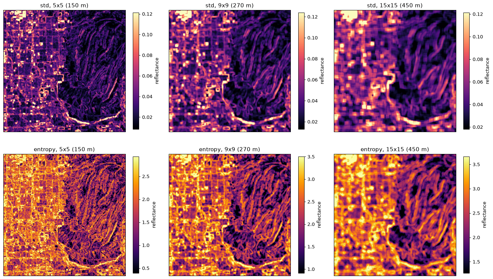
With a 5 × 5 window the maps resolve individual blocks and streets but are noisy. At 15 × 15 (450 m) the city becomes one high-texture zone and the boundary between city and fan is smeared over several hundred metres. A 9 × 9 window is a reasonable compromise for 30 m Landsat.
First-order texture of the full scene
Code
t0 = time.time() # start the timer# the same two statistics for the whole scenefos_full = tx.first_order_stats(ls["nir"], size=9, stats=("std", "entropy"))print(f"Full scene ({ls.rio.width} x {ls.rio.height}): {time.time() - t0:.1f} s") # how long the full scene tookfig, axes = plt.subplots(1, 2, figsize=(15, 6)) # two panels# local standard deviationrs.viz.plot_raster(fos_full["std"], ax=axes[0], cmap="magma", title="NIR local std (9x9), full scene")# local entropyrs.viz.plot_raster(fos_full["entropy"], ax=axes[1], cmap="inferno", title="NIR local entropy (9x9), full scene")for a in axes: # for both panels: a.add_patch(Rectangle((900, 500), 512, 512, fill=False, ec="cyan", lw=1.5)) # mark the study window a.set_xticks([]); a.set_yticks([]) # no pixel ticksplt.tight_layout(); plt.show() # arrange and draw
Full scene (1679 x 1512): 1.0 s
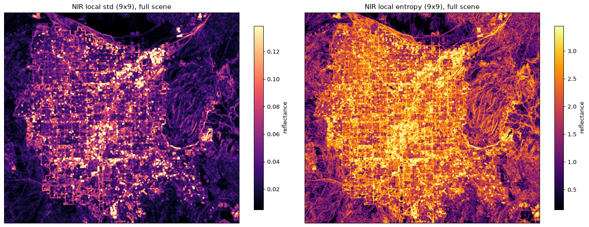
At scene scale, texture outlines the urbanized valley: the city has high local std and entropy, the surrounding desert basins low values. Mountain ranges sit in between, because ridges and gullies create contrast only along their slopes.
Gray-Level Co-occurrence Matrix (GLCM)
A worked example
Before applying GLCM to Landsat, we build one by hand on the 4 × 4, 4-level test image used by Haralick et al. (1973). For offset d = 1 at θ = 0° (the right-hand neighbour), we count every (reference, neighbour) pair.
Code
from skimage.feature import graycomatrix, graycoprops # GLCM and its features from scikit-imagetoy = np.array([[0, 0, 1, 1], # a 4 x 4 image with gray levels 0 to 3 [0, 0, 1, 1], [0, 2, 2, 2], [2, 2, 3, 3]], dtype="uint8")# 1. Raw counts: rows = reference gray level i, columns = neighbour gray level j.# distance 1, angle 0 (right-hand neighbour); [:, :, 0, 0] drops the d and theta axesC = graycomatrix(toy, distances=[1], angles=[0], levels=4, symmetric=False, normed=False)[:, :, 0, 0]# 2. Symmetric matrix (each pair counted in both directions) and probabilities.S = C + C.T # count each pair in both directionsP = S / S.sum() # counts -> joint probabilitiesprint("Counts C(i, j), d = 1, theta = 0:");print(C) # show the three matricesprint("\nSymmetric C + C^T:");print(S)print("\nNormalized P(i, j):");print(P.round(3))
# Haralick features computed directly from the formulas and with scikit-image.i, j = np.indices(P.shape) # row index i and column index j of every GLCM cellmu_i, mu_j = (i * P).sum(), (j * P).sum() # means of i and j weighted by P# standard deviations of i and jsd_i, sd_j = np.sqrt(((i - mu_i)**2* P).sum()), np.sqrt(((j - mu_j)**2* P).sum())by_hand = { # Haralick features written out from their formulas"contrast": (P * (i - j)**2).sum(), # large when neighbours differ strongly"dissimilarity": (P *abs(i - j)).sum(), # like contrast, but linear in |i - j|"homogeneity": (P / (1+ (i - j)**2)).sum(), # large when neighbours are similar"energy": np.sqrt((P**2).sum()), # square root of the angular second moment# linear dependence of neighbouring gray levels"correlation": (P * (i - mu_i) * (j - mu_j)).sum() / (sd_i * sd_j),"entropy": -(P[P >0] * np.log2(P[P >0])).sum(), # randomness of the pair distribution (bits)}# the symmetric, normalised GLCM from scikit-imagePn = graycomatrix(toy, [1], [0], levels=4, symmetric=True, normed=True)# scikit-image has no entropy property, so it is skippedskimage_vals = {k: graycoprops(Pn, k)[0, 0] for k in by_hand if k !="entropy"}pd.DataFrame({"by formula": by_hand, "scikit-image": skimage_vals}).round(4) # both columns should agree
by formula
scikit-image
contrast
0.5833
0.5833
dissimilarity
0.4167
0.4167
homogeneity
0.8083
0.8083
energy
0.3819
0.3819
correlation
0.7195
0.7195
entropy
3.0221
NaN
The formulas and scikit-image agree exactly. (graycoprops does not offer entropy in every version, so it is computed from P directly, as tx.glcm_texture does.)
Most pairs sit on or next to the diagonal (equal or adjacent gray levels), so contrast is low and homogeneity is high: this toy image is made of uniform blocks. Moving pairs away from the diagonal raises contrast, dissimilarity and entropy.
GLCM in geolattice.rsense
tx.glcm_texture(img, size, step, distance, angles, levels, props) repeats this for every window:
quantize the band to levels gray levels using the global minimum and maximum,
build the symmetric, normalized GLCM of each size × size window at distance pixels for each of the angles, and average the matrices over the angles (rotation-invariant texture),
compute the requested Haralick features,
evaluate windows every step pixels and resample to full resolution (nearest neighbour).
Parameter guidance for Landsat: 16 to 64 gray levels (32 is a good default), windows of 5 to 15 pixels, distance = 1 for the finest texture, step = 1 or 2 for maps and larger steps for quick looks.
Code
# GLCM of NIR: 9 x 9 window, 32 gray levels, distance 1, averaged over 4 directions.t0 = time.time() # start the timer# step=2: features every second pixel, then interpolated backglcm = tx.glcm_texture(nir, size=9, step=2, levels=32)print(f"glcm_texture: {time.time() - t0:.1f} s ->", list(glcm.data_vars)) # run time and the featurescm = {"contrast": "magma", "homogeneity": "viridis", "energy": "cividis", # a colour map per feature"correlation": "RdBu_r", "dissimilarity": "magma", "entropy": "inferno"}fig, axes = plt.subplots(2, 3, figsize=(16, 10)) # 2 x 3 panelsfor ax, f inzip(axes.ravel(), glcm.data_vars): # one panel per feature rs.viz.plot_raster(glcm[f], ax=ax, cmap=cm[f], title=f"GLCM {f}") # draw the feature ax.set_xticks([]); ax.set_yticks([]) # no pixel ticksplt.tight_layout(); plt.show() # arrange and draw
glcm_texture: 13.0 s -> ['contrast', 'homogeneity', 'energy', 'correlation', 'dissimilarity', 'entropy']
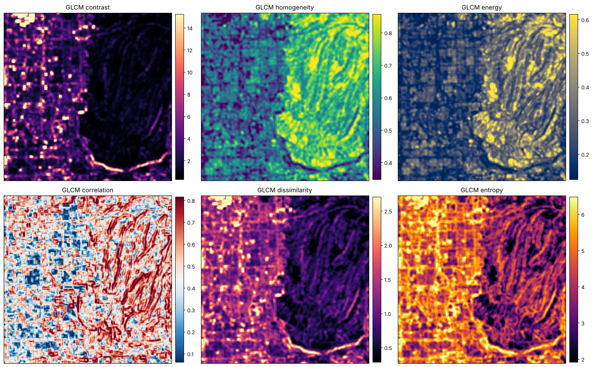
Contrast, dissimilarity and entropy are high over the city and along the Wash; homogeneity and energy are high on the fan and the ridges. Correlation is highest along the ridges, where reflectance changes gradually and consistently across each fold, and lowest inside city blocks where neighbouring pixels change abruptly.
Code
# GLCM features are strongly inter-related. Their correlation shows which ones are redundant.# pixels as rows, features as columns; 30,000 random pixelsg_df = glcm.to_dataframe()[list(glcm.data_vars)].dropna().sample(30000, random_state=0)g_df.corr().round(2) # correlation between the six GLCM features
contrast
homogeneity
energy
correlation
dissimilarity
entropy
contrast
1.00
-0.68
-0.53
0.02
0.91
0.67
homogeneity
-0.68
1.00
0.91
0.08
-0.91
-0.95
energy
-0.53
0.91
1.00
-0.15
-0.77
-0.95
correlation
0.02
0.08
-0.15
1.00
-0.02
0.18
dissimilarity
0.91
-0.91
-0.77
-0.02
1.00
0.89
entropy
0.67
-0.95
-0.95
0.18
0.89
1.00
Contrast and dissimilarity measure almost the same thing (r = 0.91), and homogeneity, energy and entropy form one tight group (|r| = 0.91 to 0.95). Correlation is nearly independent of all the others (|r| ≤ 0.18). Three features (contrast, homogeneity and correlation) cover most of the GLCM information in this scene.
Direction
Averaging over four angles makes GLCM rotation-invariant. Computing it for one angle at a time shows directional texture. The Las Vegas street grid runs north-south and east-west, and the ridges of Frenchman Mountain strike roughly north-north-east.
Code
# Contrast measured only horizontally (0 deg) and only vertically (90 deg).# angle 0: pairs along rowsc0 = tx.glcm_texture(nir, size=9, step=2, angles=(0.0,), props=("contrast",))["contrast"]# angle pi/2: pairs along columnsc90 = tx.glcm_texture(nir, size=9, step=2, angles=(np.pi /2,), props=("contrast",))["contrast"]# Log-ratio > 0: stronger contrast along rows (features running north-south); < 0: the reverse.ratio = np.log((c0 +1e-3) / (c90 +1e-3)) # 1e-3 avoids dividing by zerofig, axes = plt.subplots(1, 3, figsize=(17, 5)) # three panelsrs.viz.plot_raster(c0, ax=axes[0], cmap="magma", title="Contrast, 0 deg (along rows)") # horizontal contrastrs.viz.plot_raster(c90, ax=axes[1], cmap="magma", title="Contrast, 90 deg (along columns)") # vertical contrast# red: horizontal stronger; blue: vertical strongerrs.viz.plot_raster(ratio, ax=axes[2], cmap="RdBu_r", title="log(contrast 0 / contrast 90)")for a in axes: # no pixel ticks a.set_xticks([]); a.set_yticks([])plt.tight_layout(); plt.show() # arrange and draw
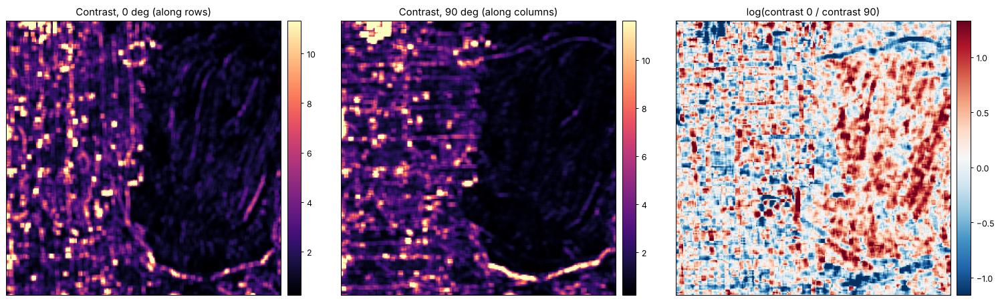
The ratio is clearly positive (red) over Frenchman Mountain: its ridges strike roughly north-north-east, so moving along a row crosses them (high contrast) while moving along a column follows them. East-west features, such as reaches of the Wash and the road along the northern edge, are negative (blue). In the city the sign changes block by block, following the north-south and east-west streets.
Gray levels and window size
A 9 × 9 window holds 81 pixels, which must populate an levels × levels matrix. With many levels the matrix becomes sparse and the features unstable.
Code
# Effect of the number of gray levels and the window size on GLCM contrast and homogeneity.rows = [] # one row per combinationfor levels in [8, 16, 32, 64]: # quantisation: 8 to 64 gray levelsfor size in [5, 9, 15]: # window: 5, 9 and 15 pixels t0 = time.time() # time each combination# step=4 for speed g = tx.glcm_texture(nir, size=size, step=4, levels=levels, props=("contrast", "homogeneity")) c, h = g["contrast"].values, g["homogeneity"].values # values as NumPy arrays rows.append({"levels": levels, "window": size, # median, interquartile range and run time"contrast median": np.nanmedian(c),"contrast IQR": np.subtract(*np.nanpercentile(c, [75, 25])), # 75th minus 25th percentile"homogeneity median": np.nanmedian(h),"seconds": round(time.time() - t0, 1)})pd.DataFrame(rows).round(3) # the comparison table
levels
window
contrast median
contrast IQR
homogeneity median
seconds
0
8
5
0.269
0.284
0.866
0.9
1
8
9
0.269
0.229
0.868
0.9
2
8
15
0.269
0.215
0.870
0.9
3
16
5
0.497
0.584
0.773
1.1
4
16
9
0.538
0.631
0.775
1.0
5
16
15
0.579
0.687
0.773
1.0
6
32
5
1.562
2.500
0.602
1.6
7
32
9
1.752
2.692
0.600
1.6
8
32
15
1.993
2.890
0.597
1.6
9
64
5
5.909
10.366
0.402
3.8
10
64
9
6.746
11.163
0.404
3.7
11
64
15
7.730
11.941
0.405
3.7
Contrast depends strongly on the number of gray levels: its median grows from about 0.27 at 8 levels to 6 to 8 at 64 levels, because squared gray-level differences grow with the quantization range. Homogeneity falls from about 0.87 to 0.40. GLCM values are comparable only between images processed with the same levels, window and quantization range. The window size changes the medians much less than levels does. Run time grows with levels; 32 is a good default.
GLCM on several bands at once
When the input has a leading band dimension, the GLCM is computed for every band in one call.
Code
stack = sub[BANDS].to_array("band") # the four bands as one DataArray with a 'band' dimension# GLCM homogeneity of every band in one callg_bands = tx.glcm_texture(stack, size=9, step=2, props=("homogeneity",))print(g_bands["homogeneity"].dims, g_bands["homogeneity"].shape) # the result keeps the band dimensionfig, axes = plt.subplots(1, 4, figsize=(20, 4.5)) # one panel per bandfor ax, b inzip(axes, BANDS): # loop over the bands rs.viz.plot_raster(g_bands["homogeneity"].sel(band=b), ax=ax, cmap="viridis", # homogeneity of this band title=f"GLCM homogeneity, {b}") ax.set_xticks([]); ax.set_yticks([]) # no pixel ticksplt.tight_layout(); plt.show() # arrange and draw# one column per band, one row per pixelh_df = pd.DataFrame({b: g_bands["homogeneity"].sel(band=b).values.ravel() for b in BANDS}).dropna()print("Correlation of GLCM homogeneity between bands:") # how similar the four homogeneity layers areprint(h_df.corr().round(2)) # correlation table
('band', 'y', 'x') (4, 512, 512)
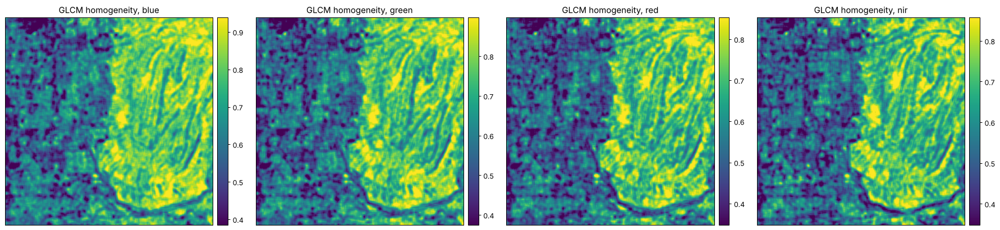
Correlation of GLCM homogeneity between bands:
blue green red nir
blue 1.00 0.97 0.94 0.89
green 0.97 1.00 0.96 0.91
red 0.94 0.96 1.00 0.95
nir 0.89 0.91 0.95 1.00
The four homogeneity maps look almost the same (r = 0.89 to 0.97 between bands). Texture from the most informative band is usually enough; computing it on every band mostly adds redundant layers.
Gray-Level Run-Length Matrix (GLRLM)
A worked example
The same 4 × 4 toy image, read row by row: each run is a maximal sequence of equal gray levels.
Code
def runs_of(line): # split a 1-D sequence into runs of equal values"""Gray level and length of every run in a 1-D sequence.""" out, start = [], 0# start = first index of the current runfor k inrange(1, len(line) +1): # walk along the line (one step past the end)if k ==len(line) or line[k] != line[start]: # the run ends at the line end or where the value changes# store (gray level, run length) and start a new run out.append((int(line[start]), k - start)); start = kreturn out # list of runsall_runs = [r for row in toy for r in runs_of(row)] # horizontal runs of every row of the toy image# the run-length matrixR = np.zeros((4, 4), int) # R[gray level, run length - 1]for g, length in all_runs: # count each run R[g, length -1] +=1# column = run length minus oneprint("Horizontal runs (gray level, length):", all_runs) # the runs# the matrix as a labelled tableprint(pd.DataFrame(R, index=[f"level {g}"for g inrange(4)], columns=[f"length {r}"for r inrange(1, 5)]))lengths = np.array([length for _, length in all_runs], float) # length of every run# short-run emphasis, long-run emphasis and run percentageprint(f"\nSRE = {np.mean(1/ lengths**2):.3f}, LRE = {np.mean(lengths**2):.3f}, RP = {len(lengths) / toy.size:.3f}")
The 16 pixels form 8 horizontal runs, so RP = 0.5. Most runs have length 2 and one has length 3, giving LRE = 4.25. A finer texture (more, shorter runs) would raise SRE and RP; a striped texture with long uniform rows would raise LRE.
tx.glrlm_texture(img, size, step, levels, directions, features) computes SRE, LRE and RP from the horizontal and/or vertical runs of each quantized window. Run statistics need enough pixels per window, so GLRLM uses a larger default window (16 × 16) and fewer gray levels (16) than GLCM.
Code
t0 = time.time() # start the timerglrlm = tx.glrlm_texture(nir, size=16, step=4, levels=16) # 16 x 16 windows, 16 gray levels, every fourth pixel# run time and the features (SRE, LRE, RP)print(f"glrlm_texture: {time.time() - t0:.1f} s ->", list(glrlm.data_vars))fig, axes = plt.subplots(1, 3, figsize=(17, 5)) # three panels# one panel and colour map per featurefor ax, f, c inzip(axes, glrlm.data_vars, ["magma", "viridis", "magma"]): rs.viz.plot_raster(glrlm[f], ax=ax, cmap=c, title=f"GLRLM {f}") # draw the feature ax.set_xticks([]); ax.set_yticks([]) # no pixel ticksplt.tight_layout(); plt.show() # arrange and draw
glrlm_texture: 4.4 s -> ['SRE', 'LRE', 'RP']
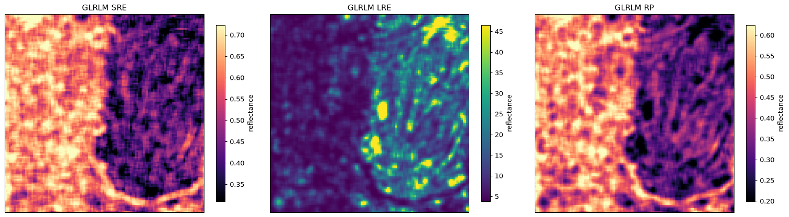
The city has short runs (high SRE and RP), because the quantized gray level changes every one or two pixels across the street grid. The fan and the ridges have long runs: in the sample boxes LRE is 5.6 in the city, 28.4 on the fan and 22.7 on the ridges, and RP is 0.54 against 0.29 on both natural surfaces.
Code
# Directional runs: horizontal only vs vertical only.# long-run emphasis from horizontal runs onlyrp_h = tx.glrlm_texture(nir, size=16, step=4, levels=16, directions=("horizontal",), features=("LRE",))["LRE"]# long-run emphasis from vertical runs onlyrp_v = tx.glrlm_texture(nir, size=16, step=4, levels=16, directions=("vertical",), features=("LRE",))["LRE"]fig, axes = plt.subplots(1, 3, figsize=(17, 5)) # three panelsrs.viz.plot_raster(rp_h, ax=axes[0], cmap="viridis", title="LRE, horizontal runs") # horizontal runsrs.viz.plot_raster(rp_v, ax=axes[1], cmap="viridis", title="LRE, vertical runs") # vertical runs# red: longer horizontal runs; blue: longer vertical runsrs.viz.plot_raster(np.log(rp_h / rp_v), ax=axes[2], cmap="RdBu_r", title="log(LRE horizontal / vertical)")for a in axes: # no pixel ticks a.set_xticks([]); a.set_yticks([])plt.tight_layout(); plt.show() # arrange and draw
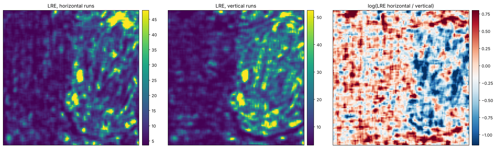
On the ridges vertical runs are longer than horizontal runs (blue), because a column follows a north-north-east striking ridge while a row cuts across it. East-west features (the southern reaches of the Wash, the road along the northern edge, east-west streets) give longer horizontal runs (red). This is the run-length counterpart of the directional GLCM map in the GLCM section.
Structural texture: edge density and lacunarity
tx.edge_density(img, size, sigma, low_threshold, high_threshold) runs Canny on the band and returns the share of edge pixels in each size × size window. tx.lacunarity(img, box_sizes, size) returns one gliding-box lacunarity layer per box size, computed inside a moving analysis window (default 4 × the largest box).
A toy check of lacunarity
Two binary patterns with the same 30% cover: one random, one clumped. Their means are identical, but lacunarity separates them at every box size.
Code
from scipy.ndimage import gaussian_filter # smoothing filterrng = np.random.default_rng(1) # random generator with a fixed seedrandom_pat = (rng.random((128, 128)) <0.3).astype(float) # 30 % of pixels set at randomsmooth = gaussian_filter(rng.random((128, 128)), 4) # smoothed noise has patches# the top 30 % of the smoothed noise: same cover, clumpedclumped = (smooth > np.quantile(smooth, 0.7)).astype(float)boxes = (2, 4, 8, 16) # gliding-box sizes in pixels# mean lacunarity per box size (rows) and pattern (columns)lac_tab = pd.DataFrame({name: {f"r = {r}": float(np.nanmean(tx.lacunarity(p, box_sizes=(r,), size=64)[f"lac_r{r}"]))for r in boxes} # one value per box size# the two patternsfor name, p in [("random 30%", random_pat), ("clumped 30%", clumped)]})fig, axes = plt.subplots(1, 3, figsize=(14, 4)) # two patterns and their curvesaxes[0].imshow(random_pat, cmap="gray_r"); axes[0].set_title("Random, 30% cover") # random patternaxes[1].imshow(clumped, cmap="gray_r"); axes[1].set_title("Clumped, 30% cover") # clumped patternfor name in lac_tab: # one curve per pattern axes[2].plot(boxes, lac_tab[name], "o-", label=name) # lacunarity against box size# log-log axesaxes[2].set(xscale="log", yscale="log", xlabel="Box size r (pixels)", ylabel="Lacunarity", title="Lacunarity curves")axes[2].legend() # legendfor a in axes[:2]: # no ticks on the two images a.set_xticks([]); a.set_yticks([])plt.tight_layout(); plt.show() # arrange and draw# show the tablelac_tab.round(3)
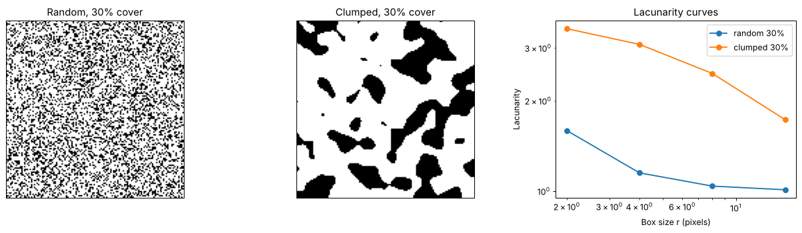
random 30%
clumped 30%
r = 2
1.592
3.477
r = 4
1.150
3.081
r = 8
1.039
2.466
r = 16
1.010
1.730
Both patterns cover 30% of the area, but the clumped pattern has two to three times the lacunarity at every box size. Lacunarity of the random pattern drops to about 1 by r = 8 (uniform at that scale), while the clumped pattern stays heterogeneous up to r = 16, the size of its clumps.
Code
t0 = time.time() # start the timeredens = tx.edge_density(nir, size=9, sigma=1.0) # share of Canny edge pixels in each 9 x 9 windowlac = tx.lacunarity(nir, box_sizes=(2, 4, 8, 16)) # lacunarity at four box sizesprint(f"edge_density + lacunarity: {time.time() - t0:.1f} s") # run timefrom skimage.feature import canny # the Canny detector itself, to show the edges# NaN replaced by the mean so Canny can runedges = canny(np.nan_to_num(nir.values, nan=float(nir.mean())), sigma=1.0)fig, axes = plt.subplots(2, 3, figsize=(16, 10)) # 2 x 3 panels# the edge pixelsaxes[0, 0].imshow(edges, cmap="gray_r"); axes[0, 0].set_title("Canny edges of NIR (sigma = 1)")rs.viz.plot_raster(edens, ax=axes[0, 1], cmap="magma", title="Edge density (9x9)") # edge densityaxes[0, 2].axis("off") # empty panelfor ax, f inzip(axes[1], ["lac_r2", "lac_r8", "lac_r16"]): # lacunarity at three of the box sizes# draw it; the title takes the box size from the layer name rs.viz.plot_raster(lac[f], ax=ax, cmap="viridis", title=f"Lacunarity, box r = {f.split('r')[-1]}")for a in axes.ravel(): # no pixel ticks a.set_xticks([]); a.set_yticks([])plt.tight_layout(); plt.show() # arrange and draw
edge_density + lacunarity: 0.1 s
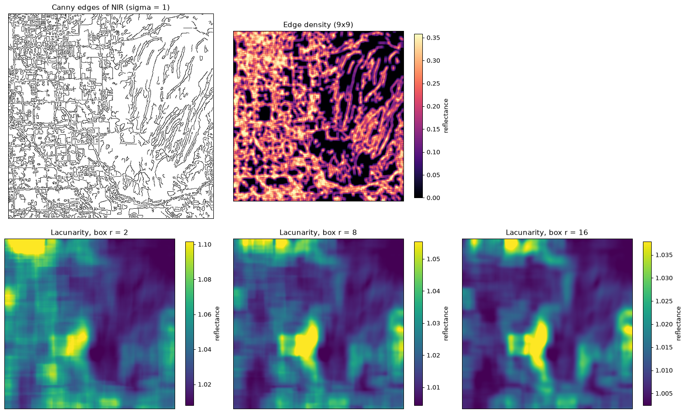
About a quarter of the pixels in the urban sample box are Canny edges (edge density 0.26), against 0.08 on the fan and 0.10 on the ridges. The edge map reproduces the street grid, and on the mountain it traces individual ridge lines while the slopes between them stay edge-free.
On reflectance, lacunarity stays close to 1 (1.01 to 1.04 in the sample boxes) because reflectance never drops to zero, so there are no true gaps. The highest values are where very bright and very dark surfaces meet inside one analysis window: the large commercial roofs in the north-west and the dark parks and ponds next to the bright fan. The range shrinks as the box grows, because larger boxes average the clumps out. Lacunarity is most useful on binary or sparse layers, such as a tree or building mask.
Code
# Edge density depends on the Canny smoothing scale sigma.fig, axes = plt.subplots(1, 3, figsize=(16, 5)) # three panelsfor ax, s inzip(axes, [0.5, 1.0, 2.0]): # three smoothing scales# edge density at this sigma rs.viz.plot_raster(tx.edge_density(nir, size=9, sigma=s), ax=ax, cmap="magma", title=f"Edge density, sigma = {s}") ax.set_xticks([]); ax.set_yticks([]) # no pixel ticksplt.tight_layout(); plt.show() # arrange and draw
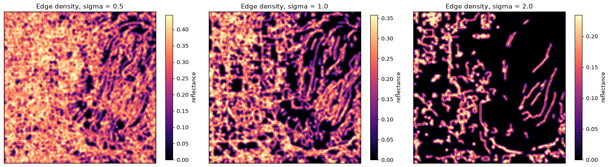
A small sigma (0.5) detects noise edges everywhere, even on the fan. With sigma = 2 only the main streets, the Wash and the major ridge lines remain. sigma = 1 keeps the street grid while suppressing most noise on the natural surfaces.
Application: texture signatures and clustering
Three 40 × 40 pixel boxes (1.2 × 1.2 km), chosen by eye on the false-colour image, are used to compare texture signatures:
Box
Rows
Columns
Surface
Urban grid
100-140
40-80
Residential blocks and streets
Alluvial fan
300-340
270-310
Smooth bare desert soil
Mountain ridges
130-170
400-440
Folded sedimentary ridges of Frenchman Mountain
Code
# three 40 x 40 pixel sample boxes (rows, columns) in the study windowBOXES = {"Urban grid": (slice(100, 140), slice(40, 80)),"Alluvial fan": (slice(300, 340), slice(270, 310)), # gravel slopes east of the city"Mountain ridges": (slice(130, 170), slice(400, 440))} # rugged terrain# one colour per boxCOLORS = {"Urban grid": "#d7191c", "Alluvial fan": "#fdae61", "Mountain ridges": "#2b83ba"}fig, ax = plt.subplots(figsize=(6, 6)) # one panel# colour infrared backgroundrs.viz.plot_rgb(sub, "false_color", ax=ax, title="Sample boxes on the study window")for name, (ys, xs) in BOXES.items(): # draw each box# x = column start, y = row start, then width and height ax.add_patch(Rectangle((xs.start, ys.start), xs.stop - xs.start, ys.stop - ys.start,# outline only, labelled for the legend fill=False, ec=COLORS[name], lw=2.5, label=name))ax.legend(loc="lower left", fontsize=8); ax.set_xticks([]); ax.set_yticks([]) # legend, no ticksplt.show() # draw
Code
from sklearn.cluster import KMeans # k-means clusteringfrom sklearn.preprocessing import StandardScaler # standardise features to mean 0, std 1from scipy.ndimage import generic_filter # moving-window filter for the speckle measuredef box_means(ds): # average feature values per sample box"""Mean of every variable of `ds` inside each sample box."""# rows = features, columns = boxesreturn pd.DataFrame({name: {v: float(ds[v].isel(y=ys, x=xs).mean()) for v in ds.data_vars}for name, (ys, xs) in BOXES.items()})def plot_signatures(sig, title): # compare the boxes feature by feature"""Bar chart of box means, min-max scaled per feature across the three boxes."""# scale each feature to 0-1 across the three boxes norm = sig.sub(sig.min(axis=1), axis=0).div(sig.max(axis=1) - sig.min(axis=1), axis=0) fig, ax = plt.subplots(figsize=(max(7, 0.75*len(norm)), 4.5)) # width grows with the number of features x = np.arange(len(norm)) # one group of bars per featurefor k, name inenumerate(norm.columns): # one bar per box, shifted sideways ax.bar(x + (k -1) *0.27, norm[name], width=0.27, color=COLORS[name], label=name) # draw the bars ax.set_xticks(x, norm.index, rotation=45, ha="right") # feature names, rotated ax.set(ylabel="Relative value (0 = lowest box, 1 = highest)", title=title) # labels ax.legend(); plt.tight_layout(); plt.show() # legend and drawdef kmeans_map(ds, k=5, n_fit=40000, seed=0): # unsupervised map from a set of layers"""Standardize the layers, fit k-means on a random pixel sample and label every pixel.""" df = ds.to_dataframe(dim_order=["y", "x"])[list(ds.data_vars)] # pixels as rows, layers as columns ok = df.notna().all(axis=1).values # pixels without missing values X = StandardScaler().fit_transform(df[ok].values) # standardise so every layer weighs the same rng = np.random.default_rng(seed) # random sample generator# fit on at most 40,000 random pixels (faster) km = KMeans(k, n_init=10, random_state=seed).fit(X[rng.choice(len(X), min(n_fit, len(X)), replace=False)]) lab = np.full(ok.size, np.nan); lab[ok] = km.predict(X) # label all valid pixels; others stay NaN# labels back on the image gridreturn xr.DataArray(lab.reshape(ds.sizes["y"], ds.sizes["x"]), coords={"y": ds.y, "x": ds.x}, dims=("y", "x"))def speckle(lab): # how noisy a cluster map is"""Share of pixels whose label differs from the majority label of their 3 x 3 neighbourhood.""" a = np.nan_to_num(lab.values, nan=-1).astype(int) # NaN -> -1 so the labels are integers# majority label in each 3 x 3 window mode = generic_filter(a, lambda v: np.bincount(v.astype(int) +1).argmax() -1, size=3)returnfloat((a != mode).mean()) # share of pixels that differ from their neighbourhood majoritydef box_purity(lab): # how uniform each box is in a cluster map"""Share of each box's pixels that fall in the box's most common cluster.""" out = {} # one value per boxfor name, (ys, xs) in BOXES.items(): # loop over the boxes v = lab.isel(y=ys, x=xs).values.ravel() # labels inside the box v = v[np.isfinite(v)].astype(int) # drop missing labels out[name] = np.bincount(v).max() / v.size # share of the most common labelreturn out # dictionary box -> purity# Spectral layers used as the baseline in every notebook: the four bands and NDVI.# normalised difference vegetation indexndvi = ((sub["nir"] - sub["red"]) / (sub["nir"] + sub["red"])).rename("NDVI")spectral = xr.Dataset({**{b: sub[b] for b in BANDS}, "NDVI": ndvi}) # four bands plus NDVI
Code
stat_feats = xr.Dataset({ # the texture layers of this notebook in one Dataset# first-order statistics"NIR std": fos["std"], "NIR skewness": fos["skewness"], "NIR entropy": fos["entropy"],"GLCM contrast": glcm["contrast"], "GLCM homogeneity": glcm["homogeneity"], # GLCM features"GLCM correlation": glcm["correlation"], "GLCM entropy": glcm["entropy"], # more GLCM features"GLRLM SRE": glrlm["SRE"], "GLRLM LRE": glrlm["LRE"], "GLRLM RP": glrlm["RP"], # run-length features"Edge density": edens, "Lacunarity r4": lac["lac_r4"], # structural features})sig = box_means(stat_feats) # mean of every feature in every sample box# show the tablesig.round(4)
Urban grid
Alluvial fan
Mountain ridges
NIR std
0.0653
0.0266
0.0310
NIR skewness
0.1643
-0.0522
0.0018
NIR entropy
2.7501
1.6567
1.7080
GLCM contrast
4.6090
0.8619
0.8265
GLCM homogeneity
0.4766
0.7248
0.7429
GLCM correlation
0.5083
0.5043
0.5883
GLCM entropy
5.3309
3.2812
3.2565
GLRLM SRE
0.6383
0.3991
0.3962
GLRLM LRE
5.6354
28.3656
22.6576
GLRLM RP
0.5356
0.2934
0.2920
Edge density
0.2565
0.0805
0.0991
Lacunarity r4
1.0350
1.0084
1.0152
Code
plot_signatures(sig, "Statistical and structural texture signatures (NIR)") # bar chart of the box signatures
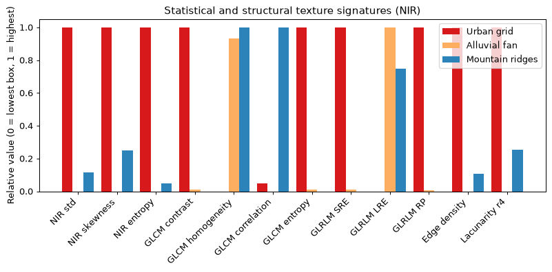
The urban grid has the highest value on every roughness feature (std, entropy, GLCM contrast and entropy, SRE, RP, edge density), often 3 to 5 times the natural surfaces. The fan and the ridges are similar on most features: at 30 m both are smooth. They differ in GLCM correlation (0.59 on the ridges, 0.50 on the fan) and in run length (LRE 28 on the fan, 23 on the ridges). No single feature separates all three surfaces, but a combination does.
Code
# Correlation of each texture feature with the spectral layers.# spectral and texture layers together; pixels as rowsdf_all = xr.merge([spectral, stat_feats], compat="override").to_dataframe()[list(spectral.data_vars) +list(stat_feats.data_vars)].dropna() # keep these columns, drop pixels with gaps# correlation of each texture feature (rows) with each spectral layer (columns)cross = df_all.corr().loc[list(stat_feats.data_vars), list(spectral.data_vars)]fig, ax = plt.subplots(figsize=(6, 6.5)) # one panelim = ax.imshow(cross, cmap="RdBu_r", vmin=-1, vmax=1) # the correlation matrix as an image# label rows and columnsax.set_xticks(range(cross.shape[1]), cross.columns); ax.set_yticks(range(cross.shape[0]), cross.index)for i inrange(cross.shape[0]): # write each value in its cellfor j inrange(cross.shape[1]): # columns ax.text(j, i, f"{cross.iloc[i, j]:.2f}", ha="center", va="center", fontsize=7) # two decimalsplt.colorbar(im, shrink=0.7); ax.set_title("Texture vs spectral correlation") # colour bar and titleplt.tight_layout(); plt.show() # arrange and draw
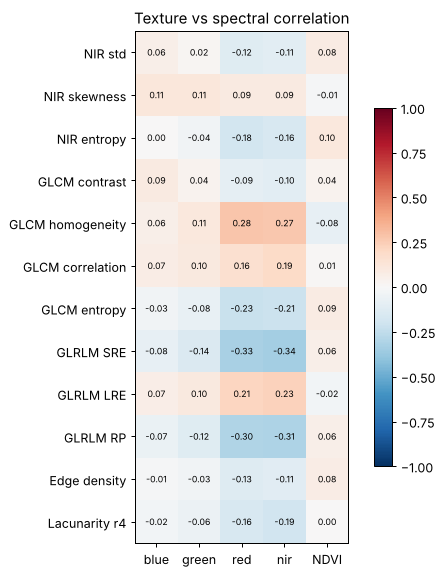
Every statistical texture feature is only weakly correlated with the spectral bands (|r| ≤ 0.34) and almost uncorrelated with NDVI. Texture carries information that the spectral layers do not.
Does this family add information? A clustering test
Texture is useful only if it carries information that the spectral bands do not. We run k-means with 5 clusters on (a) the four bands and NDVI only and (b) the same spectral layers plus this notebook’s texture features, all standardized. Two numbers summarize the maps:
Speckle: the share of pixels whose cluster differs from the majority of their 3 × 3 neighbourhood (lower = more spatially coherent).
Purity: the share of pixels in each sample box that fall in that box’s most common cluster (higher = the surface is mapped as one unit).
Code
def compare_clusterings(texture_ds, label): # clustering with and without the texture layers"""k-means on spectral layers only vs spectral + texture layers; maps, speckle and box purity.""" k_spec = kmeans_map(spectral) # five spectral layers k_both = kmeans_map(xr.merge([spectral, texture_ds], compat="override")) # spectral plus texture layers fig, axes = plt.subplots(1, 3, figsize=(18, 6)) # three panels rs.viz.plot_rgb(sub, "false_color", ax=axes[0], title="Colour infrared") # reference imagefor ax, lab, t inzip(axes[1:], [k_spec, k_both], # the two cluster maps with their titles ["k-means, spectral only (5 layers)",f"k-means, spectral + {label} ({5+len(texture_ds.data_vars)} layers)"]): ax.imshow(lab, cmap="Set2", interpolation="nearest") # one colour per cluster ax.set_title(f"{t}\nspeckle = {speckle(lab):.1%}") # title with the speckle sharefor a in axes: # no pixel ticks a.set_xticks([]); a.set_yticks([]) plt.tight_layout(); plt.show() # arrange and drawreturn pd.DataFrame({"spectral only": box_purity(k_spec), # box purity of both maps, as percentages# format each value as a percentagef"spectral + {label}": box_purity(k_both)}).map(lambda v: f"{v:.0%}")
Code
# Log-transform the heavy-tailed features before clustering.stat_km = stat_feats.copy() # a copy used only for clusteringfor f in ["GLCM contrast", "GLRLM LRE"]: # these two features have long right tails stat_km[f] = np.log10(stat_feats[f] +1e-6) # log scale makes them less dominated by a few large valuescompare_clusterings(stat_km, "statistical texture") # maps, speckle and box purity
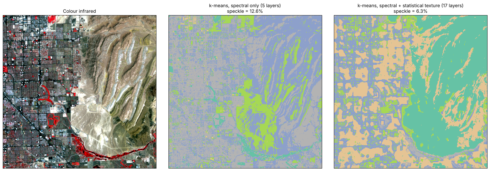
spectral only
spectral + statistical texture
Urban grid
53%
70%
Alluvial fan
58%
91%
Mountain ridges
66%
95%
With spectral layers only, k-means splits the scene by brightness: the fan and the ridges are cut into interleaved light and dark clusters, the city is a salt-and-pepper mix, and 12.6% of the pixels disagree with their neighbourhood. Adding statistical texture halves the speckle (6.3%) and raises purity in every box: from 53% to 70% in the city, 58% to 91% on the fan and 66% to 95% on the ridges. The clusters now follow land-surface units: one smooth natural desert, two kinds of city blocks, and the Wash.
The cost: window-based texture blurs boundaries by about half a window (135 m for 9 × 9), and the fan and ridges, which are spectrally distinct, fall into one cluster. Texture works best together with spectral layers in a supervised classifier that can weight each layer.
Saving texture layers
Each texture result keeps the coordinates and CRS of the input, so it can be written directly as a GeoTIFF and stacked with other predictors.
Code
OUT = Path("outputs") /"texture"# output folder for texture rastersOUT.mkdir(parents=True, exist_ok=True) # create it if needed# Dataset -> one multi-band GeoTIFF (one band per feature)stat_feats.to_array("feature").astype("float32").rio.write_crs(ls.rio.crs).rio.to_raster(OUT /"nir_statistical_texture.tif")with rasterio.open(OUT /"nir_statistical_texture.tif") as src: # read the file back to check it# number of bands, size and CRSprint(f"nir_statistical_texture.tif: {src.count} bands, {src.width} x {src.height}, {src.crs}")
nir_statistical_texture.tif: 12 bands, 512 x 512, EPSG:32611
Summary and exercises
Key points
First-order statistics are fast but blind to spatial arrangement; two windows with the same histogram get the same values (see Why texture? Same histogram, different arrangement).
GLCM measures how gray levels co-occur at a given offset. Contrast/dissimilarity, the homogeneity/energy/entropy group and correlation cover most of its information.
GLCM values depend strongly on levels and the quantization range, so compare only images processed with identical settings.
Directional GLCM and GLRLM reveal oriented structures: street grids, ridges, crop rows.
Edge density and lacunarity describe the density and gap structure of primitives; lacunarity is most informative on sparse or binary layers.
Texture from different bands of the same scene is highly redundant; one band (here NIR) is usually enough.
Compute GLCM texture on NDVI instead of NIR. Which surfaces change their texture signature?
Compute contrast for each of the four angles separately and map the direction of maximum contrast. Does it follow the street grid and the strike of the ridges?
Run tx.glcm_texture with distance=2 and distance=4. How does contrast change over the city?
Threshold NDVI > 0.3 to make a vegetation mask and compute its lacunarity. At which box size does the Las Vegas Wash differ most from the city parks?
Repeat the clustering test with only three features: one first-order, one GLCM and one structural.
References
Canny, J. (1986). A computational approach to edge detection. IEEE TPAMI, 8(6), 679-698.
Galloway, M.M. (1975). Texture analysis using gray level run lengths. Computer Graphics and Image Processing, 4(2), 172-179.
Haralick, R.M., Shanmugam, K. and Dinstein, I. (1973). Textural features for image classification. IEEE Transactions on Systems, Man, and Cybernetics, SMC-3(6), 610-621.
Plotnick, R.E., Gardner, R.H., Hargrove, W.W., Prestegaard, K. and Perlmutter, M. (1996). Lacunarity analysis: a general technique for the analysis of spatial patterns. Physical Review E, 53(5), 5461-5468.